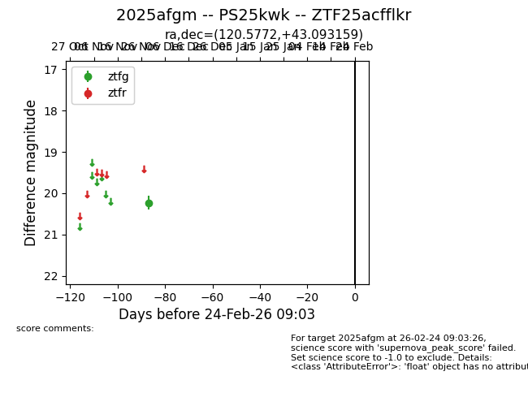
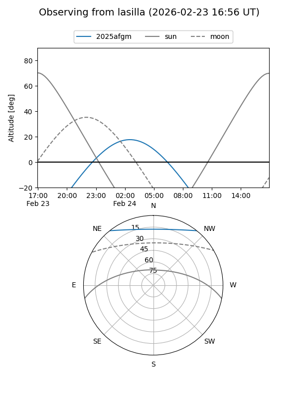
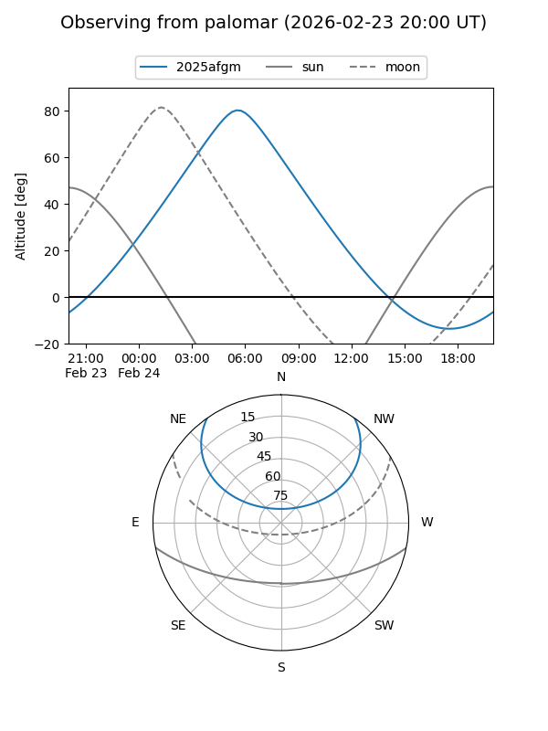

2025afgm
Target 2025afgm at 2025-12-30 22:44
Aliases and brokers:
FINK: fink-portal.org/ZTF25acfflkr
Lasair: lasair-ztf.lsst.ac.uk/objects/ZTF25acfflkr
ALeRCE: alerce.online/object/ZTF25acfflkr
TNS: wis-tns.org/object/2025afgm
YSE: ziggy.ucolick.org/yse/transient_detail/2025afgm
alt names
ZTF25acfflkr (ztf,fink_ztf)
2025afgm (tns,yse)
PS25kwk (panstarrs)
Coordinates:
equatorial (ra, dec) = 120.5772,+43.09316
equatorial (HMS+DMS) = 08:02:18.52,+43:05:35.37
galactic (l, b) = (176.8616,+30.61766)
Flags:
Photometry:
last ztfg=20.23
1 ztfg detections
Lightcurve

Visibility


Additional plots